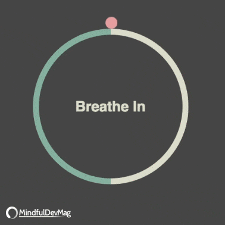
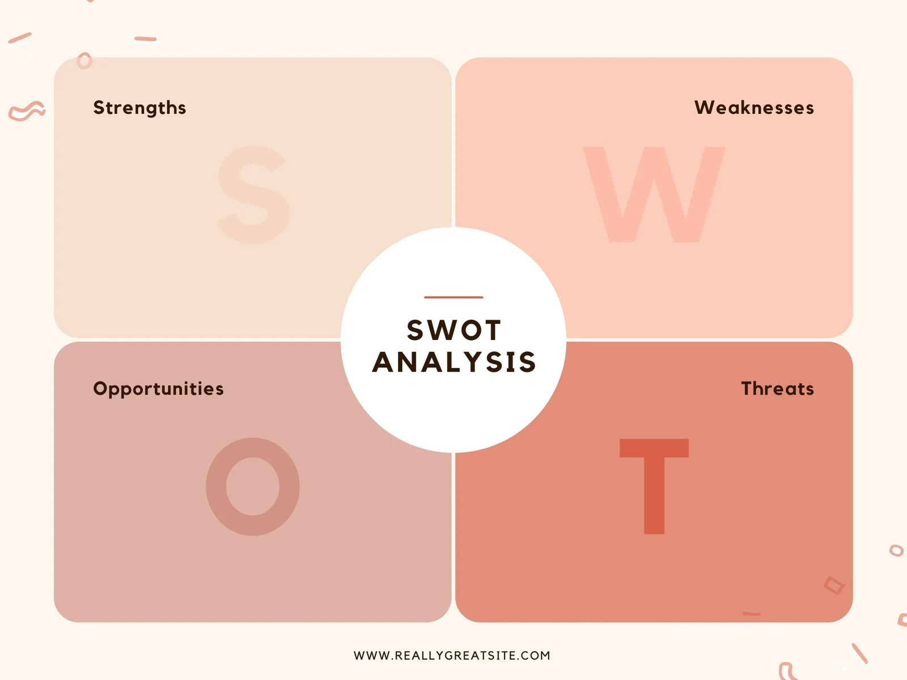
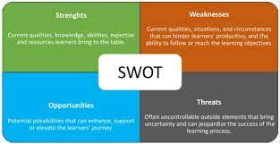

"The soul always knows what to do to heal itself.
The challenge is to silence the mind." - Caroline Myss
what is spirituality? why is it important?
Spirituality involves the recognition of a feeling or sense or belief that there is something greater than myself, something more to being human than sensory experience, and that the greater whole of which we are part is cosmic or divine in nature.
How is spirituality linked with mental health?
Spirituality can help address issues such as poor self-esteem, low confidence, lack of self-control, and fear of daily tasks and challenges. For this reason, it can be a helpful extension to mental health treatment plans. It can also simply be a way of keeping mental health strong.
Different ways for self exploration:
Self-discovery might sound like a big, intimidating concept, but it’s really just a process of:
examining your life
figuring out what’s missing
taking steps toward fulfillment
You don’t need to begin with a complete picture — after all, your journey is all about discovering what the full picture is.
But try asking yourself things like:
What do I want from life?
Where do I see myself in 5 years? 10?
What do I regret?
What makes me proud of myself?

Here are few do along meditation videos:
SWOT Analysis


A SWOT analysis is a strategic planning tool that helps individuals and organizations identify and understand their Strengths, Weaknesses, Opportunities, and Threats. It is a comprehensive framework that enables a systematic evaluation of both internal and external factors that can impact a business, project, or individual. Here's an overview of each component in a SWOT analysis:
It helps to develop strategies to attain your goals
You can be better than your friends and colleagues
Shows where you currently stand on the path of success
Measures your scopes of reaching desired goals
Boosts your career, life and personality
Increases self-confidence and self-esteem and helps to better understand self-image
Helps to better understand who you really are as a person
Maximizes your strengths and diminishes your weaknesses
Explores and also enhances your soft skills and hard skills
It helps you understand your preferences and personality traits.
Focuses on your attitudes, abilities, skills, capabilities and capacities